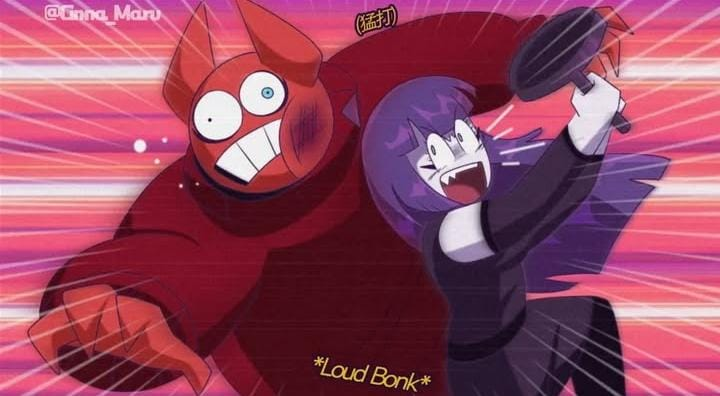
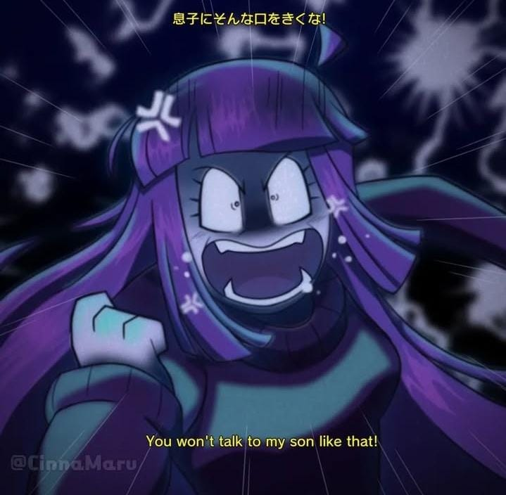
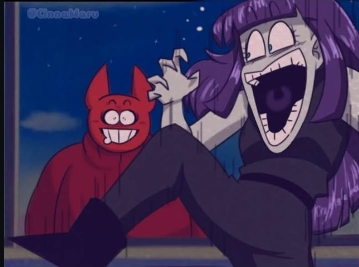

✨ ¿Qué incluye este estilo?
Este tipo de ilustración recrea la textura, composición y paleta de color de un anime clásico. Es perfecto para escenas dramáticas, nostálgicas o divertidas con estilo visual auténtico.

「*¡PUM fuerte!*」

「¡No le hables así a mi hijo!」

「...」